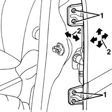

7010A14 rear side door - adjust centering and moulding - includes adaptation of hinges and seals on door compartment
- Path
- Procedures > 70 FITTINGS > 7010 PASSENGER COMPARTMENT REAR SIDE DOORS > 7010A rear side door assembly > 7010A14 rear side door - adjust centering and moulding - includes adaptation of hinges and seals on door compartment
- Kind
- repair procedure (removal / refitting; the operation number is the code)
- Applies to
- all engines; all production periods
- Interactive page
- https://sloeber94.github.io/elrnDB-fMltpl/en/#/2892066
Applies to: all engines; all production periods
1. Loosen the bolts.
2. Adjust the door position, using the bolt slots, so that it is perfectly aligned with the body.

Applies to: all engines; all production periods
After adjustment, tighten the bolts to the specified torque.
 | Fastening | Component | Ø | Value (daNm) |
|---|---|---|---|---|
- | Bolt | REAR SIDE DOOR HINGES | - | 4.1 - 6.0 |
Touch up the paintwork in the hinge area.
Check the striker and catch fit together properly. If necessary 7010A10 rear side door - adjust striker and adapt seal if necessary